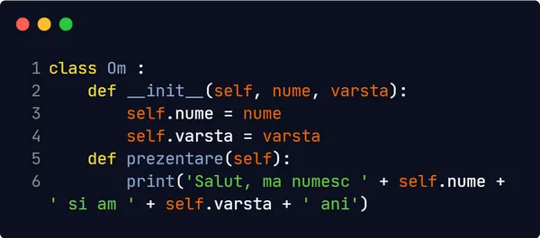

Clasa este un tip de date abstract, care descrie comportamentul și atributele unui obiect din realitate.
Pentru a defini o clasă, aveți nevoie nevoie de cuvântul esențial: class, urmat de numele pe
care vreți să-l
atribuiți clasei respective.
Puteți privi o clasă ca pe o schiță: aceasta doar definește un set de acțiuni și însușiri. Pentru a putea utiliza o clasa, trebuie să creați un obiect de tipul clasei respective. Variabila 'nume' dinăuntrul clasei 'Animal' se numește câmp sau atribut.
Dacă apelați funcția print(caineleMeu.nume), programul ne va afișa 'Rex'. În cazul în care
vreți să alegeți
un alt nume pentru animalul nostru, trebuie să creați un constructor pentru clasa dumneavoastră.
Astfel, veți putea crea un animal cu numele dorit:
Dacă apelați funcția print(pisicaMea.nume), programul va afișa 'Cherry'. Bineînțeles, puteți
să creați câte
atribute doriți pentru o clasă.
Dacă atributele definesc trăsăturile unui obiect, pentru comportamentul unui obiect (un set de acțiuni) va trebui să definiți metode. Metodele sunt reprezentate de un set de instrucțiuni care se execută când sunt apelate.
Vom defini o clasă Om, cu 2 atribute: vârstă și nume, și o funcție prin care obiectul nostru ce reprezintă un om se prezintă utilizatorului.
Dacă definiți un om cu un nume și o vârstă și apelați prezentare(), obiectul va afișa
valorile
atributelor
introduse.
Când definiți constructorul sau o funcție a unei clase, puteți observa cuvântul cheie self.
Acesta este
folosit pentru a accesa atributele clasei. Cuvântul self poate avea orice nume:
Această variantă cu alt termen în locul lui self va determina un comportament similar cu
exemplul
anterior.